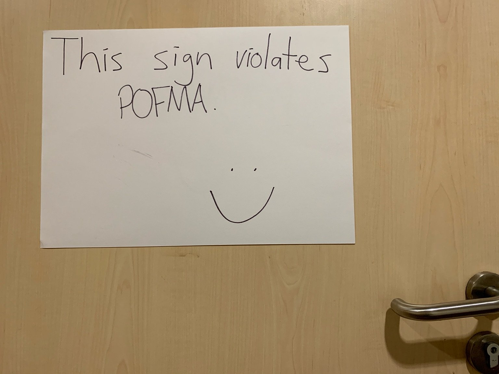

Recently a sign has appeared in Singapore that reads:

The question for the Singaporean government is: Does this sign violate POFMA?
POFMA (the "Protection from Online Falsehoods and Manipulation Act") is Singapore's anti-disinformation law, passed in 2019. The law states:
7.—(1) A person must not do any act in or outside Singapore in order to communicate in Singapore a statement knowing or having reason to believe that — (a) it is a false statement of fact; and (b) the communication of the statement in Singapore is likely to — (i) be prejudicial to the security of Singapore or any part of Singapore; (ii) be prejudicial to public health, public safety, public tranquillity or public finances; (iii) be prejudicial to the friendly relations of Singapore with other countries; (iv) influence the outcome of an election to the office of President, a general election of Members of Parliament, a by-election of a Member of Parliament, or a referendum; (v) incite feelings of enmity, hatred or ill-will between different groups of persons; or (vi) diminish public confidence in the performance of any duty or function of, or in the exercise of any power by, the Government, an Organ of State, a statutory board, or a part of the Government, an Organ of State or a statutory board.
I myself have displayed this sign in Singapore. I am a person, and putting up the sign is an act of communication. Thus the government must determine if 7(1)(a) and 7(1)(b) apply. They provide the following definitions:
(2) In this Act — (a) a statement of fact is a statement which a reasonable person seeing, hearing or otherwise perceiving it would consider to be a representation of fact; and (b) a statement is false if it is false or misleading, whether wholly or in part, and whether on its own or in the context in which it appears.
Suppose that the government decides to prosecute me under POFMA. To do so would be to declare that in their opinion, the sign violates POFMA. Thus they would have to claim that 7(1)(a) applies. Let us grant them (as we must if their prosecution is to succeed) that the sign's claim is a statement of fact. It remains only to determine whether it is indeed false, as the government would be claiming. We can easily prove that the government cannot consistently hold that the sign's claim is false in this case. For compare:
Ethan's Sign: Ethan's sign violates POFMA.
Government: Ethan's sign violates POFMA.
The sign and the government would be making exactly the same claim. Thus, if the government decides that the sign is illegal under POFMA, they are committed to the sign's claim being true, and thus not illegal under POFMA. And they could not claim that is "misleading" either—its only claim is that it violates POFMA, which it does, so how could it possibly mislead? What could it mislead about? Thus if the government holds that it violates POFMA, it cannot be false or misleading, whether in whole or in part (it has only one part), whether on its own or in context (its context is an otherwise claimless sign). And so the government would contradict itself, were it to prosecute.
Does the sign then fail to violate POFMA? One thing is certain: If the government holds that the sign doesn't violate POFMA, then in their opinion the sign is clearly false: it says that it violates POFMA when it doesn't. Under this supposition, it is quite possible that the sign will end up violating POFMA after all. For it would be a false statement, about the laws of Singapore, that may well prove "prejudicial to the public tranquility" of Singapore [7(b)(ii)]. We might imagine, for example—as seems admittedly unlikely—that the presence of this sign winds up fomenting a vigorous and destabilizing public debate.
Indeed, the sign could be modified to make its running afoul of 7(b) all but certain. Suppose the sign had read instead:
Either this sign violates POFMA, or PM Lee called PM Abe's mother a hamster.
(N.B. To my knowledge, PM Lee has never called PM Abe's mother a hamster. But claims that he had would surely "be prejudicial to the friendly relations of Singapore with other countries" [7(b)(iii)].)
Much the same reasoning as above applies. If the government says that this sign's claim is false, it would be claiming that a disjunction is false. Claiming that A ∨ B is false is logically equivalent to claiming that ¬A ∧ ¬B is true, which logically entails that ¬A is true. Here, ¬A, which the government would be committed to upon an attempted prosecution, is: “this sign does not violate POFMA”. And so, they would be forced to admit that the revised sign does not violate POFMA after all.
Nor would it help to claim that the statement is false "in part" due to the latter disjunct's being false. If A ∨ B were considered false "in part" due to B's being false, that would have the effect of banning most logically complex discourse in Singapore. Indeed, the government presumably wants us to be able to reason like this: "If PM Lee called PM Abe's mother a hamster, we'd have heard about it on the Straits Times. We didn't hear about it on the Straits Times, and so PM Lee must not have called PM Abe's mother a hamster." The first sentence, a conditional, contains a false antecedent, but should obviously not count "false in part" under POFMA.
All of this suggests a strategy for avoiding any prosecution whatever under POFMA: Simply append to any statement, "…or else this statement is illegal under POFMA." Then if the government tries to prosecute you, that will have the effect of rendering your utterance true, in their opinion. (N.B. This is not legal advice, and I take no responsibility for the efficacy of this strategy in practice.)
Therefore, in conclusion: Either all of the above foregoing is true, or else this very webpage is illegal under POFMA.